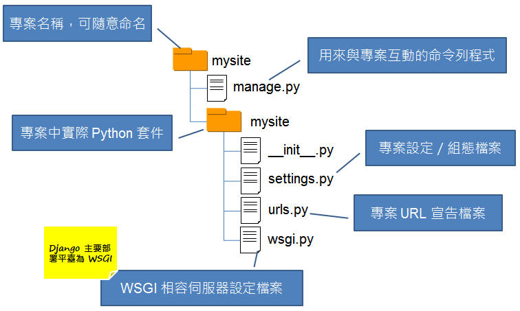
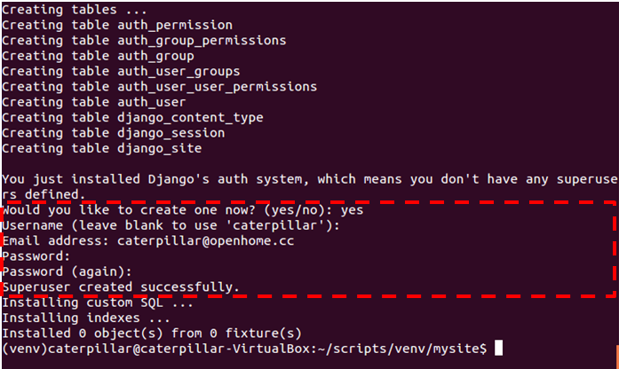
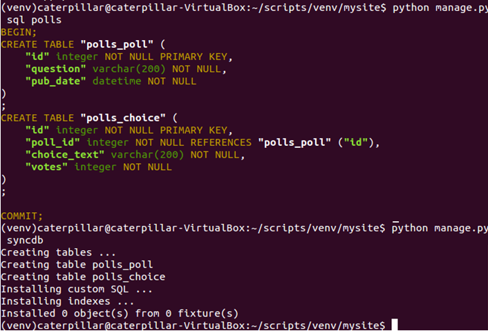
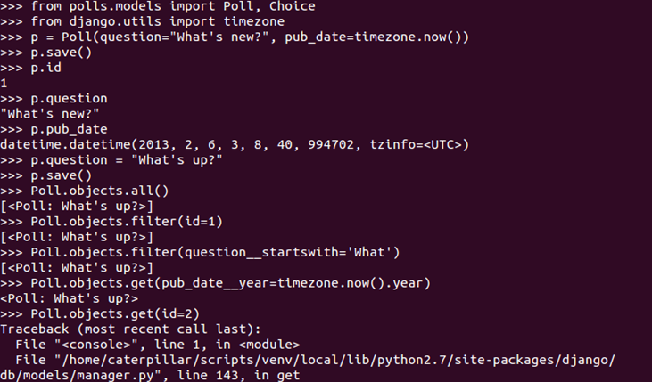
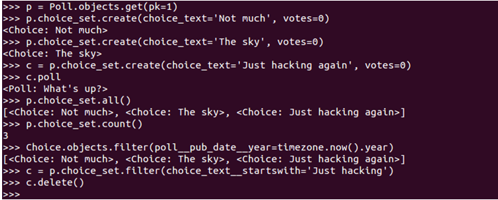

你已經建立第一個 Django 專案，那麼專案中有哪些東西呢？我們來看看 ...
{kind=link}

相關的組態設定該如何進行，我們還是實際從練習中瞭解 …
練習 10：建立資料庫與 App
開啟 mysite/settings.py，將其中
DATABASES 的 'default' 項目中，'ENGINE' 設定為 'django.db.backends.sqlite3'，'NAME' 設定為你想要的資料庫檔案位置，例如 '/home/caterpillar/scripts/venv/mysite/db.sqlite3'：
...
DATABASES = {
'default': {
'ENGINE': 'django.db.backends.sqlite3',
'NAME': '/home/caterpillar/scripts/venv/mysite/db.sqlite3',
'USER': '',
'PASSWORD': '',
'HOST': '',
'PORT': '',
}
}
...接著執行
python manage.py syncdb，你就會看到一些建構資料表格的過程，然後會建立一個預設的驗證系統，如果你想要使用 Django 預設的後台管理，就會使用到這個驗證系統，你可以輸入使用者名稱、郵件、密碼等，下圖是個示範： {kind=link}

接下來鍵入指令
python manage.py startapp polls 建立一個簡單的 poll app，這是一個用來作問題投票用的簡單 app；然後編輯 polls/models.py 的內容如下：
from django.db import models
class Poll(models.Model):
question = models.CharField(max_length=200)
pub_date = models.DateTimeField('date published')
def was_published_recently(self):
return self.pub_date >= timezone.now() - datetime.timedelta(days=1)
def __unicode__(self):
return self.question
class Choice(models.Model):
poll = models.ForeignKey(Poll)
choice_text = models.CharField(max_length=200)
votes = models.IntegerField()
def __unicode__(self):
return self.choice_text這建立了兩個資料模型
Poll 與 Choice，Poll 中有 question 與 pub_date 兩個欄位，代表想問題描述與發佈日期，was_published_recently 方法用來判斷，這個問題是不是最近一日內新發佈的，__unicode__ 用來傳回 Poll 實例的字串說明。Choice 則用來記錄投票選項，poll 關聯至問題（Poll 實例），choice_text 是該問題的選項文字，votes 是投票數。 這個 app 剛建立，你必須讓目前專案知道，這要在 mysite/settings.py 中設定，找到其中的
'INSTALLED_APPS'，在最後加入 'polls'：
INSTALLED_APPS = (
'django.contrib.auth',
'django.contrib.contenttypes',
'django.contrib.sessions',
'django.contrib.sites',
'django.contrib.messages',
'django.contrib.staticfiles',
# Uncomment the next line to enable the admin:
# 'django.contrib.admin',
# Uncomment the next line to enable admin documentation:
# 'django.contrib.admindocs',
'polls'
)接著你可以分別執行
python manage.py sql polls 預覽將執行的 SQL，以及 python manage.py syncdb 指令進行資料庫同步，執行時的參考畫面如下： {kind=link}

接著你可以鍵入
python manage.py shell 指令，這會設定 DJANGO_SETTINGS_MODULE 環境變數，讓你可以取用 Django 的 Python 模組，然後進入 Python 互動環境，你可以在當中體驗一些 API 的使用，這些 API 是在先前的幾個動作中已經產生的，例如來玩一下 Poll 實例建立想調查的問題： {kind=link}

或者是建立
Choice 與 Poll 的一對一關係： {kind=link}

對
Poll 及 Choice 的操作，其實都會由 Django 進行一些物件關係對應（Object-Relational Mapping, ORM），也就是相關狀態，在某些操作時，都會同步至資料庫。 接下來，是該進行頁面設計了，這在下篇再來談了 ...